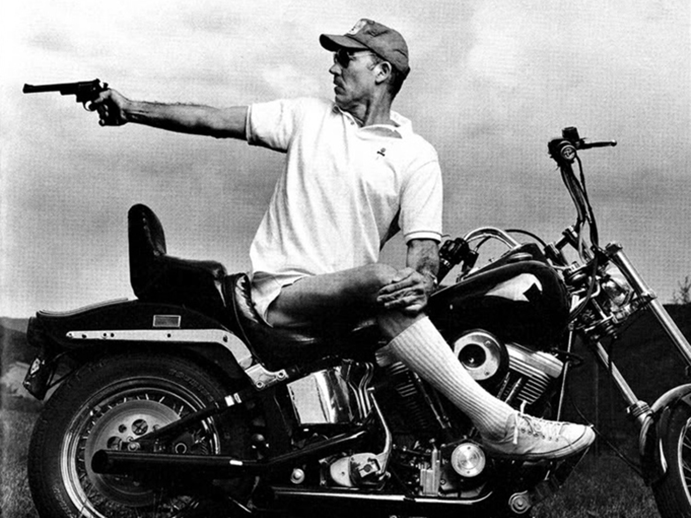

The Edge
Hunter S. Thompson

So it was always at night, like a werewolf, that I would take the thing out for an honest run down the coast. I would start in Golden Gate Park, thinking only to run a few long curves to clear my head….but in a matter of minutes I’d be out at the beach with the sound of the engine in my ears, the surf booming up on the sea wall and a fine empty road stretching all the way down to Santa Cruz…not even a gas station in the whole seventy miles; the only public light along the way is an all-night diner down around Rockaway Beach.
There was no helmet on those nights, no speed limit, and no cooling it down on the curves. The momentary freedom of the park was like the one unlucky drink that shoves a wavering alcoholic off the wagon. I would come out of the park near the soccer field and pause for a moment at the stop sign, wondering if I knew anyone parked out there on the midnight humping strip.
Then into first gear, forgetting the cars and letting the beast wind out…thirty-five, forty-five…then into second and wailing through the light at Lincoln Way, not worried about green or red signals, but only some other werewolf loony who might be pulling out, too slowly, to start his own run. Not many of these, and with three lanes on a wide curve, a bike coming hard has plenty of room to get around almost anything…then into third, the boomer gear, pushing seventy-five and the beginning of a windscram in the ears, a pressure on the eyeballs like diving into water off a high board.
Bent forward, far back on the seat, and a rigid grip on the handlebars as the bike starts jumping and wavering in the wind. Taillights far up ahead coming closer, faster, and suddenly–zaaappp–going past and leaning down for a curve near the zoo, where the road swings out to sea.
The dunes are flatter here, and on windy days sand blows across the highway, piling up in thick drifts as deadly as any oil-slick–instant loss of control, a crashing, cartwheeeling slide and maybe one of those two-inch notices in the paper the next day: “An unidentified motorcyclist was killed last night when he failed to negotiate a turn on Highway 1.”
Indeed…but no sand this time, so the lever goes up into fourth, and now there’s no sound except wind. Screw it all the way over, reach through the handlebars to raise the headlight beam, the needles leans down on a hundred and wind-burned eyeballs strain to see down the centerline, trying to provide a margin for reflexes.
But with the throttle screwed on there is only the barest margin, and nor room at all for mistakes. It has to be done right…and that’s when the strange music starts, when you stretch your luck so far that fear becomes exhilaration and vibrates along your arms. You can barely see at a hundred; the tears blow back so fast that they vaporize before they get to your ears. The only sounds are wind a dull roar floating back from the mufflers. You watch the white line and try to lean with it…huwling through a turn to the right, then to the left and down the long hill to Pacifica…letting off now, watching for cops, but only until the next dark stretch and another few seconds on the edge…
The Edge…There is no honest way to explain it because the only people who really know where it is are ones who have gone over. The others–the living–are those who who pushed their control as far as they felt they could handle it, and then pulled back, or slowed down, or did whatever they had to when it came time to choose between Now and Later.